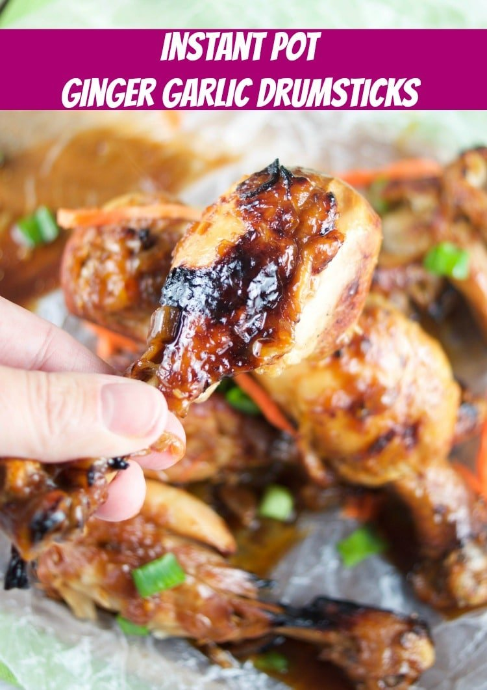

Instant Pot Ginger Garlic Drumsticks

Description
This instant pot Asian recipe for ginger garlic drumsticks is out of this world! Enjoy tender chicken in a sweet and sour sauce that's ready in no time.
Ingredients
- 6-8 chicken drumsticks skin on
- 1/4 cup water
- 1/2 cup soy sauce
- 2 tablespoons honey
- 2 tablespoons brown sugar
- 2 tablespoons rice wine vinegar
- 2 garlic clove minced
- 1 teaspoon fresh ginger minced
- 1/2 onion chopped
Steps
- In a bowl, mix the sauce ingredients: water, soy, honey, brown sugar, rice wine vinegar, garlic, ginger, and onion until combined
- Pour sauce in the instant pot
- Add chicken drumsticks and push them down so they are submerged in the sauce (they don't have to be completely covered in the sauce)
- Cook on high pressure for 10 minutes (MANUAL 10 MINUTES)
- Let the drumsticks cool for 5 minutes before releasing the steam (Natural Pressure Release 5 min NPR)
- Release the steam and hit the saute button so the sauce boils and starts reducing
- Remove the drumsticks and place them on a cookie sheet lined with parchment paper
- Broil the chicken drumsticks for 2 minutes on each side (or more if you'd like). Meanwhile, leave the sauce on the instant pot so it keeps reducing
- Remove from the oven and place the chicken drumsticks on a platter. Pour sauce over and serve.